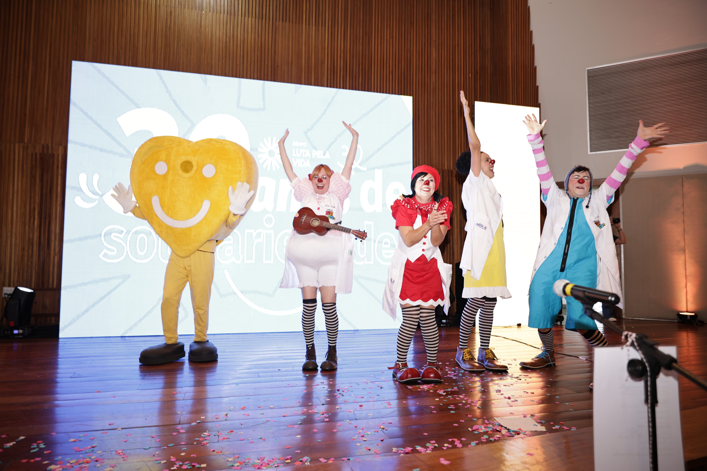
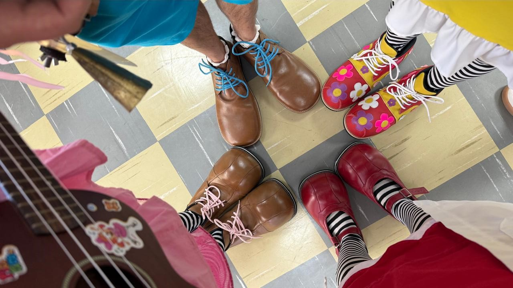

NOSSAS AÇÕES

ESPETÁCULOS
As 3 Porquinhas
Prepare-se para um clássico totalmente reinventado, cheio de humor contagiante, músicas cativantes e muita interação com o público. Uma comédia cheia de trapalhadas para divertir toda a família!

ESPETÁCULOS
Hoje vai ter Festa!
O que acontece quando cinco palhaços atrapalhados descobrem que precisam preparar uma festa e os convidados — ou seja, vocês — já estão esperando? O resultado é uma confusão deliciosamente divertida! Venha rir, se emocionar e fazer parte dessa grande FESTA!

HOSPITAL
Doutores Pititicos
Os Doutores Pititicos levam a magia do circo para dentro dos hospitais em intervenções cênicas focadas na saúde emocional. Quebrando a frieza da rotina clínica, os palhaços interagem com sensibilidade e respeito ao ritmo de cada paciente. O resultado é um ambiente mais leve, profissionais menos estressados e corações cheios de força para continuar lutando.

EMPRESARIAL
Intervenções em Empresas
Por que levar o palhaço para dentro da sua empresa? Porque rir junto aproxima, educa e protege! Seja para campanhas de conscientização, treinamentos ou datas especiais, o Grupo Circo Pititico cria momentos sob medida para o seu time!

OFICINAS
Oficina de Palhaçaria
A oficina de palhaçaria dos Doutores Pititicos ensina a arte do riso de forma leve e prática, promovendo um reencontro com sua criança interior para redescobrir o olhar curioso, a escuta ativa e a liberdade de ser feliz.